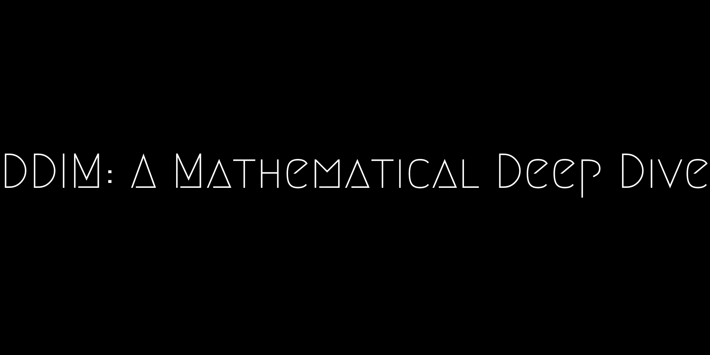

From DDPM to DDIM: A Mathematcal Deep Dive

Introduction
In this blog we will explore the DDIM paper with excruciating mathematical detail. In doing so, hopefully, bridge the gap between the two papers. While knowledge of DDPM is nice to have, it won’t be necessary. I will however, make frequent references to their approach.
Some minor points before we get into the crux of this blog:
- The main confusion between the two papers is the use of \(\alpha\). The \(\alpha\) used in DDIM is the same as \(\bar{\alpha}\) of DDPM.
- DDPM is a special case of DDIM.
- They both have the same loss function, however, the reverse (generation) process is not the same.
- This new generation process is what makes the inference process faster. Taking it from 1000 steps down to ~50.
While the paper also discusses it’s approach in a stochastic differential equation sense, I will not go through this. I do not feel confident that I understood this aspect enough to explain. Nor do I think it’s necessary.
Keep in mind as we go through the following, that the aim is to find a way to sample from our data distribution \(q(x_0)\). We are not trying to find an analytical solution, nor an approximation to the actual distribution of \(x_0\). We do this by introducing some latent variables \(x_{1,…,T}\).
The forward noising process
Let us write down the joint distribution of x\(_0\), (the image space) with that of the latents \(x_{1,..,T}\).
We construct our joint distribution such that \(x_{t-1}\) is independent of all other latents given \(x_t, x_0\).
\[ \begin{align*} q_\sigma(x_{1:T}|x_0) &= q_\sigma(x_{T-1}, x_{T-2}, ..., x_1|x_T, x_0)q_\sigma(x_T|x_0) \\ &= q_\sigma(x_T|x_0) \prod_{t=2}^Tq_\sigma(x_{t-1}|x_t, x_0) \end{align*} \]
where,
\[ \begin{align*} q_\sigma(x_T|x_0) &= \mathcal{N}(\sqrt{\alpha_T}x_0, (1-\alpha_T)\mathbf{I}) \\ q_\sigma(x_{t-1}|x_t, x_0) &= \mathcal{N}(\sqrt{\alpha_{t-1}}x_0 + \sqrt{1-\alpha_{t-1} - \sigma_t^2} . \frac{x_t - \sqrt{\alpha_t}x_0}{\sqrt{1-\alpha_t}}, \sigma^2 \mathbf{I}) \end{align*} \]
just to reiterate, this is a design decision we make to construct the joint distribution this way. In general, \(q_\sigma(x_{T-1}, x_{T-2}, ..., x_1|x_T, x_0) \ne \prod_{t=2}^Tq_\sigma(x_{t-1}|x_t, x_0)\).
Although the paper refers to it as a forward process, the way we devise our model, \(q(x_t|x_{t-1}, x_0) \ne q(x_t|x_{t-1})\). Therefore not Markovian.
Once we have this it can be shown that \(q_\sigma(x_t|x_0) = \mathcal{N}(\sqrt{\alpha_t}x_0, (1-\alpha_t)\mathbf{I})\) for all \(t\). The proof is shown by induction and is shown below. This result is important because it means that we can generate a sample \(x_t\) without having to rely on \(x_{t-1}\). DDPM also has the same marginal distribution.
Given \(q_\sigma(x_t|x_0)\) we can rewrite the distribution as,
\[ \begin{align*} x_t &= \sqrt{\alpha_t}x_0 + \sqrt{1-\alpha_t} \epsilon_t \\ \therefore \epsilon_t &= \frac{x_t-\sqrt{\alpha_t}x_0}{\sqrt{1-\alpha_t}} \end{align*} \]
where \(\epsilon_t \sim \mathcal{N}(0, \mathbf{I})\). This result can be substituted into q(x_{t-1}|x_t, x_0) to give,
\[ q_\sigma(x_{t-1}|x_t, x_0) = \mathcal{N}(\sqrt{\alpha_{t-1}}x_0 + \sqrt{1-\alpha_{t-1} - \sigma_t^2} . \epsilon_t, \sigma^2 \mathbf{I}) \]
Also worth noting that the marginals \(q(x_t|x_0)\) remain the same even at the limit of \(\sigma \to 0\).
Proof of \(q_\sigma(x_t|x_0)\)
The following is a general Gaussian identity. Given the following distributions of \(x, y\)
\[ \begin{align*} p(\mathbf{x}) &= \mathcal{N}(\mathbf{x} | \boldsymbol{\mu}, \boldsymbol{\Lambda}^{-1}) \\ p(\mathbf{y}|\mathbf{x}) &= \mathcal{N}(\mathbf{y} | \mathbf{A}\mathbf{x} + \mathbf{b}, \mathbf{L}^{-1}) \end{align*} \]
we have the marginal distribution of \(y\) as,
\[ \begin{equation*}p(\mathbf{y}) = \mathcal{N}(\mathbf{y} | \mathbf{A}\boldsymbol{\mu} + \mathbf{b}, \mathbf{L}^{-1} + \mathbf{A}\mathbf{\Lambda}^{-1}\mathbf{A}^T)\end{equation*} \]
The proof is by induction. Given \(q_\sigma(x_t|x_0)\) and \(q_\sigma(x_{t-1}|x_t, x_0)\) we will derive the form of \(q_\sigma(x_{t-1}|x_0)\).
If \(q_\sigma(x_t|x_0) = \mathcal{N}(\sqrt{\alpha_t}x_0, (1-\alpha_t)\mathbf{I})\) and
\[ q_\sigma(x_{t-1}|x_t, x_0) = \mathcal{N}(\sqrt{\alpha_{t-1}}x_0 + \sqrt{1-\alpha_{t-1} - \sigma_t^2} . \frac{x_t - \sqrt{\alpha_t}x_0}{\sqrt{1-\alpha_t}}, \sigma^2 \mathbf{I}) \]
then,
\[ \begin{align*} \mu &\equiv \sqrt{\alpha_t}x_0 \\ \Lambda^{-1} &\equiv (1-\alpha_t)\mathbf{I}\\ A &\equiv \sqrt{\frac{1-\alpha_{t-1} - \sigma_t^2}{1-\alpha_t}}\\ b &\equiv \sqrt{\alpha_{t-1}}x_0 - \sqrt{\frac{1-\alpha_{t-1} - \sigma_t^2}{1-\alpha_t}}\sqrt{\alpha_t}x_0\\ L^{-1} &\equiv \sigma^2 \mathbf{I} \end{align*} \]
Therefore for \(q(x_{t-1}|x_0)\) we have,
\[ \begin{align*} A\mu + b &= \cancel{\sqrt{\frac{1-\alpha_{t-1} - \sigma_t^2}{1-\alpha_t}}\sqrt{\alpha_t}x_0} + \sqrt{\alpha_{t-1}}x_0 - \cancel{\sqrt{\frac{1-\alpha_{t-1} - \sigma_t^2}{1-\alpha_t}}\sqrt{\alpha_t}x_0} \\ &= \sqrt{\alpha_{t-1}}x_0 \\ \end{align*} \]
and for the variance parameter, we have,
\[ \begin{align*} \mathbf{L}^{-1} + \mathbf{A}\mathbf{\Lambda}^{-1}\mathbf{A}^T &= \sigma^2 \mathbf{I} + \left(\sqrt{\frac{1-\alpha_{t-1} - \sigma_t^2}{1-\alpha_t}}\right)(1-\alpha_t)\mathbf{I}\left(\sqrt{\frac{1-\alpha_{t-1} - \sigma_t^2}{1-\alpha_t}}\right)^T \\ &= \sigma^2 \mathbf{I} + \left(\frac{1-\alpha_{t-1} - \sigma_t^2}{\cancel{1-\alpha_t}}\right)\cancel{(1-\alpha_t)}\mathbf{I} \\ &= \cancel{\sigma^2 \mathbf{I}} + (1-\alpha_{t-1} - \cancel{\sigma_t^2})\mathbf{I} \\ &= (1 - \alpha_{t-1})\mathbf{I} \end{align*} \]
which is the same form as \(q(x_t|x_0)\) and concludes the proof via induction.
Reverse (generation) process
By the end of this section we will not have a closed form solution of what \(p(x_0)\) is. Instead, what we end up is a generative process. Recall that \(x_{1:T}\) are latent parameters but not \(x_0\).
Before getting into the process, let’s derive the loss that we are optimising.
\[ \begin{align*} \log p(x_0) &= \log \int p_\theta(x_{1:T},x_0) dx_{1:T} \\ &= \log \int \frac{p_\theta(x_{1:T}, x_0) q_\sigma(x_{1:T} | x_0)}{q_\sigma(x_{1:T} | x_0)} dx_{1:T} \\ &= \log \mathbb{E}_{q_\sigma(x_{1:T} | x_0)} \left[ \frac{p_\theta(x_{0:T})}{q_\sigma(x_{1:T} | x_0)} \right] \\ &\geq \mathbb{E}_{q_\sigma(x_{1:T} | x_0)} \left[ \log \frac{p_\theta(x_{0:T})}{q_\sigma(x_{1:T} | x_0)} \right] \end{align*} \]
The last line being as a result of Jensen’s inequality. Obviously we do not know what \(p(x_0\)) is for otherwise we would have solved this problem. But what we do have is a lower bound for any given \(x_0\). We have the definition of \(q_\sigma(x_{1:T}|x_0)\) from above.
Before deriving the full lower bound, let’s recall that \(q_\sigma(x_t|x_0) = \mathcal{N}(\sqrt{\alpha_t}x_0, (1-\alpha_t)\mathbf{I})\). This can be re-written as
\[ \begin{align*} x_t &= \sqrt{\alpha_t}x_0 + \sqrt{1-\alpha_t}\epsilon \\ x_0 &= \frac{x_t - \sqrt{1-\alpha_t}\epsilon}{\sqrt{\alpha_t}} \end{align*} \]
where \(\epsilon \sim \mathcal{N}(0, \mathbf{I})\).
However, during the generation process, we will estimate this noise using a neural network, \(\epsilon_\theta(.)\), given the noised image \(x_t\). Let’s call this estimate \(x_0\), \(f_\theta(x_t)\). Therefore,
\[ f_\theta^{(t)}(x_t) = \frac{x_t - \sqrt{1-\alpha_t}\epsilon_\theta^{(t)}(x_t)}{\sqrt{\alpha_t}} \]
we can also rearrange the above, (which will come in handy soon).
\[ \epsilon_\theta^{(t)} = \frac{x_t - \sqrt{\alpha_t}f_\theta(x_t)}{\sqrt{1-\alpha_t}} \]
We define \(p_\theta(x_{0:T}) = p_\theta(x_T)\prod_{t=1}^T p_\theta (x_{t-1}|x_t)\)
$$ \[\begin{align*} p^{(t)}(\mathbf{x}_{t-1}|\mathbf{x}_t) &= \begin{cases} \mathcal{N}(f^{(1)}_\theta({x}_1), \sigma^2 \mathbf{I}) & \text{if } t = 1 \\ q_\sigma({x}_{t-1}|{x}_t, f^{(t)}_\theta({x}_t)) & \text{otherwise} \end{cases}\\ p_\theta(x_T) &= \mathcal{N}(0, \mathbf{I}) \end{align*}\]
$$
Note how we substitute \(f_\theta^{(t)}(x_t)\) for all the \(x_0\)’s in the above equation.
Lower Bound
Given this factorization, our negative (evidence) lower bound (ELBO), \(\mathcal{J}_\sigma\) becomes,
\[ \begin{align*} \mathcal{J}_\sigma = \mathbb{E}_{x_{1:T|0} \sim q(x_{1:T|0})} [ &\log q_\sigma(x_{T} | x_{0}) + \sum_{t=2}^{T} \log q_\sigma(x_{t-1} | x_{t}, x_{0}) - \sum_{t=1}^{T} \log p_\theta^{(t)} (x_{t-1} | x_{t}) - \log p_\theta(x_{T}) ] \end{align*} \]
the \(x_T\) terms cancel each other out (as \(\alpha_T=0\)), and instead of the expectation we take a Monte-Carlo estimate (single sample) of \(x_{1:T|0}\).
\[ \begin{align*} \mathcal{J}_\sigma &= \mathbb{E}_{x_{1:T|0} \sim q(x_{1:T|0})} \left[ \sum_{t=2}^{T} \log q_\sigma(x_{t-1} | x_{t}, x_{0}) - \sum_{t=1}^{T} \log p_\theta^{(t)} (x_{t-1} | x_{t}) \right] \\ &= \mathbb{E}_{x_{1:T|0} \sim q(x_{1:T|0})} \left[ \sum_{t=2}^{T} \log \frac{q_\sigma(x_{t-1} | x_{t}, x_{0})}{p_\theta^{(t)} (x_{t-1} | x_{t})} - \log p^{(0)}_\theta (x_0|x_1)\right] \\ &= \sum_{t=2}^{T} \int q(x_{t-1}, x_t| x_0)\log \frac{q_\sigma(x_{t-1} | x_{t}, x_{0})}{p_\theta^{(t)} (x_{t-1} | x_{t})} dx_{t-1}dx_t -\int q(x_1|x_0)\log p^{(0)}_\theta (x_0|x_1)dx_1\\ &= \sum_{t=2}^{T} \int q(x_t|x_0)\int q(x_{t-1}|x_t, x_0)\log \frac{q_\sigma(x_{t-1} | x_{t}, x_{0})}{p_\theta^{(t)} (x_{t-1} | x_{t})} dx_{t-1}dx_t -\mathbb{E}_{x_{1|0}} \log p^{(0)}_\theta (x_0|x_1) \\ &= \sum_{t=2}^{T} E_{x_{t|0}}\left[ D_{KL}(q(x_{t-1}|x_t, x_0)|| p_\theta^{(t)} (x_{t-1} | x_{t}) )\right] -\mathbb{E}_{x_{1|0}} \log p^{(0)}_\theta (x_0|x_1) \end{align*} \]
where the last statement comes from the definition of the KL divergence. Given that \(q_\sigma(x_{t-1}|x_t, x_0) = \mathcal{N}(\sqrt{\alpha_{t-1}}x_0 + \sqrt{1-\alpha_{t-1} - \sigma_t^2} . \frac{x_t - \sqrt{\alpha_t}x_0}{\sqrt{1-\alpha_t}}, \sigma^2 \mathbf{I})\) and \(p_\theta(x_{t-1}|x_0) = \mathcal{N}\left(\sqrt{\alpha_{t-1}}f_\theta(x_t) + \sqrt{1-\alpha_{t-1} - \sigma_t^2} . \frac{x_t - \sqrt{\alpha_t}f_\theta(x_t)}{\sqrt{1-\alpha_t}}, \sigma^2 \mathbf{I}\right)\) and using the identity of KL divergence between two gaussians where the variance is the same, we arrive at (by discarding constants),
\[ \begin{align*} D_{KL}(q(x_{t-1}|x_t, x_0)|| p_\theta^{(t)} (x_{t-1} | x_{t}) ) =& \frac{1}{2\sigma^2} (\mu_q-\mu_p)^2\\ =&\frac{1}{2\sigma^2} (\\ &\left(\sqrt{\alpha_{t-1}}x_0 + \sqrt{1-\alpha_{t-1} - \sigma_t^2} . \frac{x_t - \sqrt{\alpha_t}x_0}{\sqrt{1-\alpha_t}}\right) - \\ &\left(\sqrt{\alpha_{t-1}}f_\theta(x_t) + \sqrt{1-\alpha_{t-1} - \sigma_t^2} . \frac{x_t - \sqrt{\alpha_t}f_\theta(x_t)}{\sqrt{1-\alpha_t}}\right)\\ &)^2\\ =&\frac{1}{2\sigma^2}\left(\sqrt{\alpha_{t-1}}(x_0-f_\theta(x_t))-\sqrt{\alpha_t\frac{1-\alpha_{t-1} - \sigma_t^2}{1-\alpha_{t-1}}}(x_0-f_\theta(x_t))\right)^2\\ =&\frac{1}{2\sigma^2}\left(\alpha_t-\sqrt{\alpha_t\frac{1-\alpha_{t-1} - \sigma_t^2}{1-\alpha_{t-1}}}\right)^2(x_0-f_\theta(x_t))^2\\ =&\frac{1}{2\sigma^2}\gamma_t(x_0-f_\theta(x_t))^2 \end{align*} \]
where I replaced the terms dependent on \(\alpha_*\) as \(\gamma_t\) as it can be a pre-computed constant. This is true even for the \(\mathbb{E}{x_{1|0}} \log p^{(0)}_\theta (x_0|x_1)\) term.
Using the two identities, \(\epsilon_\theta^{(t)} = \frac{x_t - \sqrt{\alpha_t}f_\theta(x_t)}{\sqrt{1-\alpha_t}}\) and \(f_\theta^{(t)}(x_t) = \frac{x_t - \sqrt{1-\alpha_t}\epsilon_\theta^{(t)}(x_t)}{\sqrt{\alpha_t}}\) we can arrive at a similar conclusion with the KL divergence being
\[ \frac{1}{2\sigma^2}\gamma_t \frac{||\epsilon_t - \epsilon^{(t)}_\theta(x_t)||^2}{\alpha_td} \]
where \(d\) is the dimensionality of the image \(x_*\).
This is the same objective as DDPM where we attempt to estimate the error with a neural network given the noised image \(x_t\).
While there is an expectation term around this loss, we take a Monte-Carlo sample instead of taking (the intractable) expectation.
While we can minimise this loss, we can think of the \(\frac{\gamma_t}{\alpha_t}\) as an importance weighting of the loss at each time step. However, the neural network takes in two inputs, \(x_t\) and the actual timestep \(t\). If we assume that each time-step has its own neural network, which it almost does due to it’s reliant on \(t\), we can instead simplify the simplified loss below instead (without the importance weighting).
\[ ||\epsilon_t - \epsilon_\theta^{(t)}(x_t)||^2 \]
This is exactly what we do in DDPM.
Training
The training is exactly the same of DDPM. i.e. We sample a noised image from \(t\sim{1,…,T}\) and use a neural network to estimate the error.
Despite technically speaking, the loss is the expectation over \(x_t|x_0\) and that we need to sum all the terms from \(1,…,T\) we only sample one timestep \(t\) and one noised image \(x_t\). This approximation does not affect the training since, 1. Sampling one noised image is still an unbiased estimate of the full expectation and 2. We are doing stochastic gradient descent over many iterations, therefore smoothing over any undesired estimates.
Inference
This is where the paths (between DDIM and DDPM) diverge. Let us rewrite \(p_\theta(x_{t-1}|x_t)\).
\[ p_\theta(x_{t-1}|x_t) = \mathcal{N}(\sqrt{\alpha_{t-1}}f_\theta(x_t) + \sqrt{1-\alpha_{t-1} - \sigma_t^2} . \epsilon_\theta(x_t), \sigma^2 \mathbf{I}) \]
which we can rewrite as,
$$ x_{t-1} = { x_0 } + { x_t} + _{}
$$
This formulation is important since it states that at each denoising timestep we estimate \(x_0\). This means that we can skip a few of the time steps when denoising via the \(\sqrt{1 - \alpha_{t-1} - \sigma^2_t} \cdot \epsilon_\theta^{(t)}(x_t)\) term. Also worth noting that even in the denoising step we add noise, but can be deterministic if we make \(\sigma_t = 0\).
Accelerated Sampling
To solidify this idea of skipping steps, they have introduced a slightly different noising and generative framework as shown below. Note that the noising process introduced before is not equivalent to this, and no amount of marginalising latents will lead to this formulation. This is again, by construction of the latents. \(\tau\) are the skipped time steps and \(t \in \bar{\tau}\) is it’s complement (everything else).
\[ \begin{align*} &q_{\sigma, \tau}(x_{1:T}|x_0) = q_{\sigma, \tau}(x_{\tau_S}|x_0)\prod_{i=1}^S q_{\sigma, \tau}(x_{\tau_{i-1}}|x_{\tau_i}, x_0) \prod_{t \in \bar{\tau}} q_{\sigma, \tau}(x_t|x_0) \\ &q_{\sigma,\tau}(x_t | x_0) = \mathcal{N}(\sqrt{\alpha_t}x_0, (1 - \alpha_t)I) &&\forall t \in \bar{\tau} \cup \{T\}\\ &q_{\sigma,\tau}(x_{\tau_{i-1}} | x_{\tau_i}, x_0) = \mathcal{N}\left(\sqrt{\alpha_{\tau_{i-1}}}x_0 + \frac{\sqrt{1-\alpha_{\tau_{i-1}}} - \sigma^2_{\tau_i}}{\sqrt{1-\alpha_{\tau_i}}} \cdot x_{\tau_i}, \frac{\sqrt{\alpha_{\tau_i}}x_0}{\sqrt{1-\alpha_{\tau_i}}} - \sigma^2_{\tau_i}I\right) &&\forall i \in [S] \end{align*} \]
The corresponding generative process is as follows:
\[ \begin{align*} & p_{\theta}(x_{0:T}) := p_{\theta}(x_T) \underbrace{\prod_{i=1}^{S} p_{\theta}^{(\tau_i)} (x_{\tau_{i-1}} | x_{\tau_i})}_{\text{use to produce samples}} \times \underbrace{\prod_{t \in \bar{\tau}} p_{\theta}^{(t)} (x_0 | x_t)}_{\text{in variational objective}}\\ & p_{\theta}^{(\tau_i)}(x_{\tau_{i-1}} | x_{\tau_i}) = q_{\sigma,\tau}(x_{\tau_{i-1}} | x_{\tau_i}, f_{\theta}^{(\tau_i)}(x_{\tau_{i-1}})) &&\text{if } i \in [S], i > 1 \\ & p_{\theta}^{(t)}(x_0 | x_t) = \mathcal{N}(f_{\theta}^{(t)}(x_t), \sigma_t^2 I) &&\text{otherwise} \end{align*} \]
While I will not derive the lower bound in this section, you can use almost the same equations in the lower bound section to derive the exact same loss above.
Summary
To summarise all we have discussed above,
- We use the same loss function as DDPM, namely, the MSE of the estimated error function.
- We use this equation to skip steps,
\[ \begin{align*} x_{\tau-1} = \sqrt{\alpha_{\tau-1}} \underbrace{\left(\frac{x_\tau - \sqrt{1 - \alpha_\tau}\epsilon_\theta^{(\tau)}(x_\tau)}{\sqrt{\alpha_\tau}}\right)}_{\text{predicted } x_0 } + \underbrace{\sqrt{1 - \alpha_{\tau-1} - \sigma^2_\tau} \cdot \epsilon_\theta^{(\tau)}(x_\tau)}_{\text{direction pointing to } x_\tau} + \underbrace{\sigma_\tau \epsilon_\tau}_{\text{random noise}} \end{align*} \]
- Setting \(\sigma_\tau \to 0\) will allow you to sample determinstically starting from a given random state r\(x_T\).
- Read the appendices.
Acknowledgements
Kudos to Ben senpai for encouraging me to stick with the DDIM paper.